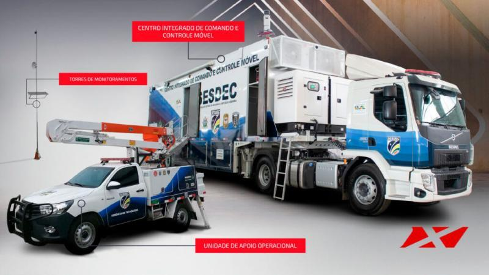

Portfólio
sex 18 outubro 2024
Experiência Profissional
-
Secretaria da Segurança, Defesa e Cidadania (SESDEC RO)
- Assessor
- fevereiro de 2024 - presente
- Sistemas de rede | Infraestrutura de tecnologia da informação | Suporte técnico | Administração | Gestão de projetos
- fevereiro de 2024 - presente
- Técnico de TI
- maio de 2023 - fevereiro de 2024
- Tecnologia da informação | Sistemas de rede | Infraestrutura de tecnologia da informação | Suporte administrativo
- maio de 2023 - fevereiro de 2024
- Assessor
-
Politec - Superintendência de Polícia Tecnico-Científica de Rondônia
- Estagiário
- agosto de 2019 - novembro de 2019
- Estagiário de TI
- agosto de 2019 - novembro de 2019
- Estagiário
Formação Acadêmica
-
Análise e Desenvolvimento de Sistemas - Unopar
- outubro de 2023 - presente
-
Técnico de Informática - Instituto Federal de Rondônia(IFRO)
- abril de 2018 - outubro 2021
Projetos
- Design do CICC Móvel 